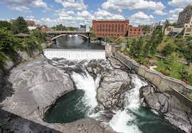

Arizona
My trip to Phoenix, AZ happened when I was 6 years old. We were going to visit my dads mother. On this trip we drove from Kansas City to Phoenix in a small Toyota Camry. So you can image two adults and two little girls riding in a car for 18 hrs goign across four states in a small car. It didn't seem small to me at the time though. Once we got there I remember seeing the cactuses and the dust tornados for the first time in my life. And then when the moutains came to view it was breath taking. I remember on the trip we visited a small town in New Mexico and shopped a little and visited with the people and I saw how people lived and experienced different cultures. And this trip opened my eyes to diversity and the impotance of embrancing others and their differences because alot can be shared and enjoyed as from things outside of your normal. Phoenix was beautiful and it opened my senses to the of the desert and all that lives in it. This place is a wishlist place to move and live for my family and I.
South Dakota
Now when I was a kid we traveled a lot. This was probably because our family seemed to be scattered to almost every state on the westside of the US. On our trip to Washington we had the pleasure of going through the great state of South Dakota where we visited Mount Rushmore National Memorial. Seeing them in pictures and on the tv does not do them justice when seeing them in person. The majesty of them and what it took for people to go up there and carve out faces into the side of a moutain is mind blowing. The park is beautiful in its own right, with winding turns and tall trees along the way. It is truely a sight to see if you have never been gone through the park. I would recommend even if you are just driving through like we were.
.jpeg)
Washington
We were going to Washington to visit my aunt who lived in Spokan at the time. It was spring and Easter was a few days a way. The most memoriable moment that I can remember was playing in the big playhouse that my cousin had in her backyard. This playhouse was so big and fun and it was the first time I had seen that there were playhouses made for kids. I had so much fun playing tea party and house, that when it was time to leave I didn't want to go without taking the hosue with us. I also remember when Easter came around that I didn't a good memory as I had become sick from eating too much of something. It think it was too much bunny chocolates or jelly beans. But I do remember getting dressed up and having an Easter egg hunt with my siblings and cousins and just having so much fun, until I got sick.
California
On this trip we were visiting my moms dad, but the there was a bonus suprise for us that we didn't know about until later on in the trip. There were a lot of firsts for this one because we were flying there and I had never been on a plan before, I had never been to the beach, and I had never been to a place that we ended up going to for our surprise later in the trip. Going to the beach was an experience that I was not expecting because of the seaweed. There were lots and lots of seaweed. But I was able to collect a lot of seashells and little sea creatures from the shallow water (even though we couldn't keep them). The beach was so much fun and differnt and I know one day I'll be able to take my kids to see it too and have the kind of expereience and overwhelmed feeling that I did when seeing the ocean for the first time. For our surprise we went to Disneyland and it was the most exciting and speechless surprise we had ever had. It was so much fun for a 6 year old and it was everything that I had imaged it would be. Now I wish we could have went to Disneyworld, at the time I thought Disneyland was the only disney anything in the world and it was huge to me. Then I found out there is a Disneyworld and I know I haven't lived.